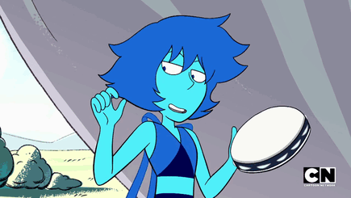
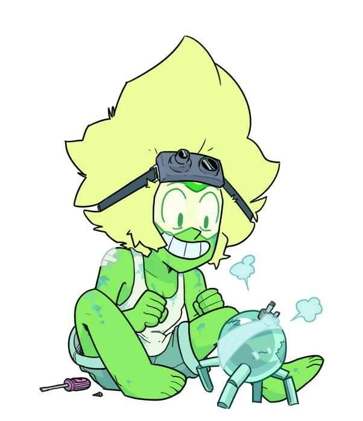
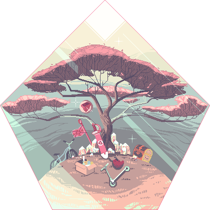

Mis Pasatiempos:
Musica:
Toda mi vida me ha gustado la musica se podria decir que es parte de mi dia a dia y sin ella quisa no
disfrutaria hacer nada de lo que hago, le da un significado a cada momento con cada cancion diferente
puedes sentir como cambia la manera de ver un momento.
.
Tecnologia:
Siempre me ha fascionado la cienca, la tecnologia, las ingenierias quisa por que mi tio me inculco eso,
desde pequeño me vi envuelto en un ambiento de tecnologias de la informacion, la ciencia, la informatica
ahi empezo el sentimiento de querer ser como mi tio,el siempre tuvo una respuesta para mi y un solucion,
ademas de introducirme al mundo de los videojuegos.
.
Videojuegos:
Como la musica los videojuegos siempre han sido de mis pasiones, a tal punto que me pude relacionar
a traves de ellos y conoci mucha gente que compartia el sentimiento con migo ahora los puedo llamar amigos.
Los videojuegos son mi vida, me encanta pasar horas analizandolos, disfrutar los paisajes, entendiendolos,
como un videojuego puede atraparte en una trama que jamas pensaste que podria existir. Para mi son mas que
un pasatiempo son parte de mi, de lo que soy.
.
Viajar y/o Pasear:
El mar y la montaña, los lugares nuevos, todo lo que la naturaleza nos brinda con tan hermosos paisajes.
Explorar ya sea nuestro pais o algun dia conocer otros es algo que me emociona todo lo que uno puede aprender
o hacer es infinito, la pesca para mi es una de mis partes favoritas de pasear(tengo suerte se podria decir), toda
mi vida me ha fascinado la playa y me gusta mucho nadar. Me encantaria conocer Italia espero poder ir en un futuro
proximo.